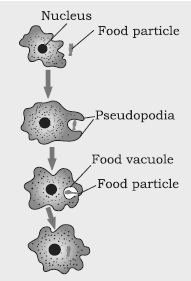
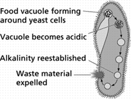

Nutrition in plants
How do living things get their food ?
The general requirement for energy and materials is common in all organisms, but it is fulfilled in different ways. Some organisms use simple food material obtained from inorganic sources in the form of carbon dioxide and water. These organisms, the autotrophs, include green plants and some bacteria. Other organisms utilise complex substances. These complex substances have to be broken down into simpler ones before they can be used for the upkeep and growth of the body. To achieve this, organisms use biocatalysts called enzymes. Thus, the heterotrophs survival depends directly or indirectly on autotrophs. Heterotrophic organisms include animals and fungi.
Autotrophic Nutrition
Carbon and energy requirements of the autotrophic organism are fulfilled by photosynthesis.
It is the process by which autotrophs take in substances from the outside and convert them into stored forms of energy.
This material is taken in the form of carbon dioxide and water which is converted into carbohydrates in the presence of sunlight and chlorophyll. Carbohydrates are utilised for providing energy to the plant. We will study how this takes place in the next section. The carbohydrates which are not used immediately are stored in the form of starch, which serves as the internal energy reserve to be used as and when required by the plant. A somewhat similar situation is seen in us where some of the energy derived from the food we eat is stored in our body in the form of glycogen.
\( 6CO_2 + 6H_2O \xrightarrow[Chlorophyll]{Sunlight} \underset{(Glucose)}{C_6H_{12}O_6} + 6O_2 \)
Let us now see what actually happens during the process of photosynthesis. The following events occur during this process
-
Absorption of light energy by chlorophyll.
-
Conversion of light energy to chemical energy and splitting of water molecules into hydrogen and oxygen
-
Reduction of carbon dioxide to carbohydrates.
These steps need not take place one after the other immediately. For example, desert plants take up carbon dioxide at night and prepare an intermediate which is acted upon by the energy absorbed by the chlorophyll during the day.
Let us see how each of the components of the above reaction are necessary for photosynthesis.
If you carefully observe a cross-section of a leaf under the microscope (shown in Fig.), you will notice that some cells contain green dots. These green dots are cell organelles called chloroplasts which contain chlorophyll. Let us do an activity which demonstrates that chlorophyll is essential for photosynthesis.
Now, let us study how the plant obtains carbon dioxide.
Stomata
-
Stomata which are tiny pores present on the surface of the leaves.
-
Massive amounts of gaseous exchange takes place in the leaves through these pores for the purpose of photosynthesis.
-
Exchange of gases occurs across the surface of stems, roots and leaves as well.
-
As large amounts of water can also be lost through these stomata, the plant closes these pores when it does not need carbon dioxide for photosynthesis.
-
The opening and closing of the pore is a function of the guard cells.
-
The guard cells swell when water flows into them, causing the stomatal pore to open. Similarly the pore closes if the guard cells shrink.
-
Based on the two activities performed above, can we design an experiment to demonstrate that sunlight is essential for photosynthesis?
Raw materials required for photosynthesis
The raw materials required for photosynthesis are \( CO_2 \) and \( H_2O \) and the products formed are carbohydrates and \( O_2 \) . Plants obtain water through their roots. Water is then transported to all plant parts with the help of the Xylem . Exchange of gases (entry of \( CO_2 \) and release of \( O_2 \) ) occurs through the stomata.
The essential conditions for photosynthesis are:
Sunlight
Place a healthy green potted plant in a dark room for 1-2 days. This is done to ensure that the plant consumes all its reserve food and the leaves do not contain any starch. Then, cover a portion of a leaf of this plant on both sides with two uniform pieces of black paper, fixed in position with two paper clips.
Now, expose this plant to bright light. After a few hours, remove the leaf,decolourize it with alcohol, and test the presence of food (starch) with iodine solution.
You will observe that the portion of the leaf covered with black paper does not show any presence of starch (food).
Chlorophyll is essential for photosynthesis
Place a variegated plant (i.e., a plant which has both green and non-green areas, for e.g., croton or money plant) in a dark room for 2 - 3 days. This is done to ensure that all the reserve food (starch) is utilized.
Place this plant in sunlight for six hours to allow photosynthesis to take place,
Then, pluck a leaf from this plant and trace the green areas on a sheet of paper. Now, decolourize the leaf using alcohol and dip it in a dilute solution of iodine for a few minutes. Wash this leaf with water and compare it with the tracings of the leaf done earlier. It will be observed that only the green areas of the leaf could photosynthesize.
Explanation
The leaf is treated with alcohol so that it loses its green colour (chlorophyll pigment) and blue-black colour (in presence of starch) obtained after treatment with iodine.
The green parts of a variegated leaf contain chlorophyll. Therefore, only these parts could photosynthesize and manufacture food. Thus, the change in colour was observed only in these parts.
Carbondioxide
Select two healthy potted plants of nearly the same size and label them as A and B . Place them in a dark room for 2-3 days. Then, place two glass plates under both the plants. Place a watch-glass containing potassium hydroxide besides pot A . Cover both the plants by inverting separate bell jars over them. Potassium hydroxide, as we know, is used to absorb \( CO_2 \) Therefore, \( CO_2 \) is not available for plant A .
Now, seal the bottom of the jars to the glass plates with the help of Vaseline. This prevents the entry of \( CO_2 \) into the set up. Then, place the plants under sunlight for 2 - 3 hours. Test one leaf each from both plants for the presence of starch, using alcohol and iodine (as explained in the previous activity). It will be observed that plant B has a higher amount of starch as compared to plant A .
Explanation of the Activity:
This happens because potassium hydroxide present besides plant A absorbs all the \( CO_2 \) . Therefore, plant A is not able to photosynthesize and manufacture food. Hence, the amount of starch present in plant B is higher than plant A .
Two phases of photosynthesis
The process of photosynthesis occurs in two places - the light reactions and the dark reactions .
-
light reactions
As the name suggests, this reaction takes place in the presence of light. Light energy is absorbed by chlorophyll molecules and is utilized for splitting water molecules into hydrogen and oxygen. Additionally in this phase, assimilatory power in the form of \( ATP \) and \( NADPH_2 \) are produced. Light reactions occur in the membranes of thylakoids.
Events occuring during light reactions:
-
Absorption of light energy by chlorophyll molecules.
-
Splitting of water molecules into hydrogen and oxygen atoms.
-
Formation of \( ATP \) and \( NADPH_2 \) .
-
Dark reactions
This reaction does not require direct light and occurs in the stroma or chloroplasts. During this phase, \( ATP \) and \( NADPH_2 \) (formed during light reactions) are utilized for the reduction of \( CO_2 \) to carbohydrates(food).
Event occurring during dark reaction:
Reduction of \( CO_2 \) to form carbohydrates
Heterotrophic Nutrition
Each organism is adapted to its environment. The form of nutrition differs depending on the type and availability of food material as well as how it is obtained by the organism. For example, whether the food source is stationary (such as grass) or mobile (such as a deer), would allow for differences in how the food is accessed and what is the nutritive apparatus used by a cow and a lion. There is a range of strategies by which the food is taken in and used by the organism. Some organisms break-down the food material outside the body and then absorb it. Examples are fungi like bread moulds, yeast and mushrooms. Others take in whole material and break it down inside their bodies. What can be taken in and broken down depends on the body design and functioning. Some other organisms derive nutrition from plants or animals without killing them. This parasitic nutritive strategy is used by a wide variety of organisms like cuscuta (amar-bel), orchids, ticks, lice, leeches and tape-worms.
How do Organisms obtain their Nutrition?
As the food and the way it is obtained differ, the digestive system is different in various organisms.
In single-celled organisms, the food may be taken in by the entire surface. But as the complexity of the organism increases, different parts become specialised to perform different functions.
Nutrition in Amoeba

-
In Amoeba takes in food using temporary finger-like extensions of the cell surface which fuse over the food particle forming a food vacuole.
-
Inside the foodvacuole, complex substances are broken down into simpler ones which then diffuse into the cytoplasm.
-
The remaining undigested material is moved to the surface of the cell and thrown out.
Nutrition in paramoecium

-
In Paramoecium, which is also a unicellular organism, the cell has a definite shape and food is taken in at a specific spot.
-
Food is moved to this spot by the movement of cilia which cover the entire surface of the cell.
Nutrition in Human Beings
Unlike plants, human beings cannot produce their own food. Thus, their mode of nutrition is heterotrophic. The term 'heterotroph' is derived from the Greek word 'Hetero' meaning different or other, and 'troph' meaning nutrition.
In this mode of nutrition, organisms obtain energy from the intake of complex organic substances, generally from plant and animal sources. These organisms are known as heterotrophs. All fungi and animals, including humans and some bacteria are heterotrophs.
Eating nutritious food is healthy because it supplies essential nutrients required to sustain life.
What happens to the food we eat? How are nutrients present in the food utilized by the body?
It is by the process of digestion that the nutrients present in food are utilised by the human body. Digestion may thus be defined as the mechanical and chemical reduction of ingested nutrients first into particles, then into molecules, so that they become small enough to move through columnar epithelial cells of the intestine into the blood.
Digestive organs and their functions
-
Mouth
Digestion of food begins in the mouth. The mouth comprises of the following:
Teeth:They tear and break down the food.
Saliva:It contains a digestive enzyme called salivary amylase, which breaks down starch into sugar.
Tongue:It is a sense organ with taste buds, which help us to differentiate between various food items. The muscular movements in the tongue move the food from the mouth into the throat, or pharynx
-
Pharynx:
It is a common passageway for food and air. It opens into the oesophagus (which leads to the stomach) and trachea (which leads to the lungs).
-
Oesophagus:
The circular smooth muscles in the oesophagus contract when food is swallowed. This prevents chewed food material from moving back into the mouth. This is followed by the contractions and relaxations of the longitudinal smooth muscles, which push the digested food forward. These movements are called peristaltic movements, which push the food into the stomach.
-
Stomach:
The stomach stores and mixes the food received from the oesophagus with the gastric juice. The gastric glands present in the walls of the stomach secrete several substances, which together constitute the gastric juice. The main components of gastric juice are hydrochloric acid, mucus, and pepsinogen. Hydrochloric acid dissolves bits of food and creates an acidic medium. In this medium, pepsinogen is converted to pepsin, which is a protein-digesting enzyme.
Acidity:
Excess production of hydrochloric acid in the stomach can damage the protective lining of the stomach. Sometimes, the valve between the oesophagus and stomach becomes weak and the acid from the stomach reaches the lower part of the oesophagus. This can result in heartburn.
| Some Interesting Facts |
-
Do you know that for every 2 weeks; the human stomach produces a new layer of mucus lining; else the stomach would digest itself
-
Everyday the human stomach produces around 2.5 litres of gastric juice! The food from the stomach passes into the small intestine
|
-
Small intestine
It is the longest part of the alimentary canal. It is made up of three parts-duodenum, jejunum, and ileum. The length of the small intestine depends on the type of food consumed by the organism. Hence, its length differs in various animals.
Length of the small intestine in animals
Herbivores have long intestines. It is 10-12 times the length of their bodies. This is because grass contains cellulose, which takes a long time to be digested. Carnivores, on the other hand, have a smaller intestine of about 3-7 times the length of their bodies. This is because the meat that enters their body begins to rot soon. Hence, their intestines are shorter in length to excrete meat out of their bodies quickly.
The small intestine produces intestinal juice from the glands present in the wall, which helps in further digestion of food.
Digestive juices from two glands, namely the liver and pancreas mixes with the food in the small intestine.
The liver produces bile juice (which causes emulsification of fats) and the pancreas produces pancreatic juice (for digesting proteins and emulsified fats).
The small intestine is the site for complete digestion of carbohydrates, proteins, and fats.
This digested food is then absorbed through the intestinal walls. The inner lining of the small intestine has millions of tiny finger-like projections called the Villi
These projections increase the surface area of the small intestine for more efficient food absorption. Within these villi, the capillaries absorb nutrients from the digested products of proteins and carbohydrates and lead them into the blood stream.
-
Large intestine
The indigestible material and water enters the large intestine. It also has villi to absorb water and some vitamins from the undigested food. This absorption of water helps to compact the faeces. It also performs the function of storage of wastes before they are excreted from the body via the anus. Therefore, the digestion of food starts in the mouth. The process of digestion continues in the stomach and small intestine. The absorption of nutrients occurs in the small intestine through diffusion.
| Dental caries |
| Dental caries or tooth decay causes gradual softening of enamel and dentine. It begins when bacteria acting on sugars produce acids that softens or demineralises the enamel. Masses of bacterial cells together, with food particles stick to the teeth to form dental plaque. Saliva cannot reach the tooth surface to neutralise the acid as plaque covers the teeth. Brushing the teeth after eating removes the plaque before the bacteria produce acids. If untreated, microorganisms may invade the pulp, causing inflammation and infection. |
Respiration
Definition
We know that there is a constant exchange of atmospheric gases. Oxygen is inhaled and carbon dioxide is exhaled. If oxygen is inhaled, then it must be used for some activity in the body. Similarly, if carbon dioxide is exhaled out of the body, then it must be because it is not required. This important life process is called respiration.
Inhalation and Exhalation
Respiration is the bodily process of inhalation and exhalation. It is the process of taking in oxygen and releasing carbon dioxide. The process involves the consumption of oxygen and liberation of carbon dioxide and water.
The oxygen inhaled is used to burn/oxidize/break down the food (glucose).This reaction produces energy required for all activities. Water and carbon dioxide are by-products of this reaction. This process occurs inside the mitochondria and is called cellular respiration. It is exactly opposite to the process of photosynthesis. It can be represented as:
\( C_6H_{12}O_6 + O_2 \longrightarrow 6CO_2 + 6H_2O + Energy \)
Thus, cellular respiration is the process by which energy is released from the breakdown of organic substances (glucose).
Aerobic and Anaerobic Respirations
Is oxygen the only molecule used to burn food and produce energy? What happens to the organisms living in regions with no oxygen?
Respiration can occur both in the presence and absence of \( O_2 \) . On this basis, it can be classified into two types:areobic and anaerobic
| Aerobic Respiration |
Anaerobic Respiration |
| It occurs in the presence of \( O_2 \) . |
It occurs in the absence of \( O_2 \) . |
| It involves the exchange of gases between an organism and outside environment. |
Excange of gases is absent. |
| It occurs in the cytoplasm and mitochondria. |
It occurs only in the cytoplasm. |
| It always releases \( CO_2 \) and \( H_2O \) . |
End products may vary. |
| It yields 38 ATP. |
It yields 2 ATP. |
Glucose is the simplest molecule that enters a series of reactions called Glycolysis and the Krebs cycle to produce energy.
Proteins and fatty acids are broken down and enter the cycle at different regions. Amino acids, depending upon the length of the carbon chain, enter the Krebs cycle at different places.
Lipids are first converted into fatty acids and then into acetyl-CoA, which enters the Krebs cycle.
Steps involved in Aerobic respiration
Step 1:
The first step is called glycolysis. It occurs in the cytoplasm of a cell. It does not require oxygen. Here, the 6-carbon molecule glucose is partially broken down into a 3-carbon molecule, pyruvate or pyruvic acid. In this step, one glucose molecule produces 2 molecules of pyruvate.
\( Glucose \xrightarrow{Glycolysis} 2 Pyruvate \)
Step 2:
The two pyruvic acid molecules are converted into acetyl CoA, which can easily enter the mitochondria, which is the site for further reactions.
Step 3:
These acetyl CoA molecules enter the mitochondrial matrix and take part in the Krebs cycle. This occurs in the presence of \( O_2. \)
Step 4:
In this step, the energy released in all the above steps is converted to ATP by ATP synthase enzyme. In aerobic respiration, a total of 36 ATP molecules are produced from one molecule of glucose
Steps involved in Anaerobic respiration
Step 1:
The first step, glycolysis, is the same as that of aerobic respiration.
\( Glucose \xrightarrow{glycolysis} Pyruvic \ acid \)
Step 2:
Pyruvic acid is not transported to the mitochondria. It remains in the cytoplasm. It is then broken down into waste products that can be removed from the cell. This entire process occurs in the absence of oxygen
\( Glucose \xrightarrow{glycolysis} Pyruvic \ acid \)
Anaerobic respiration occurs in the roots of some species of water logged plants, parasitic worms, yeast, animal muscles, and microorganisms.
In some microorganisms such as yeasts, anaerobic respiration is called fermentation. In the process of fermentation, ethanol is formed as a by-product. This is represented in the above reaction.
Illustration of anaerobic respiration
Aerobic respiration produces large amounts of energy. What about regions where energy is required, but oxygen is not available? In muscle cells, when there is a lack of oxygen, anaerobic respiration occurs where pyruvic acid is converted into lactic acid. This accumulation of lactic acid causes muscle cramps.
Brewing is an industrial application of fermentation.
Do you know that brewing industries utilize yeast?
Alcoholic fermentation is the conversion of sugar into ethyl alcohol and \( CO_2 \) . One of the by-products, \( CO_2 \) dissipates into air whereas the other by-product, ethyl alcohol, remains in the medium. This alcohol is processed in the brewing industry and is utilized commercially.
Exchange of gases in plants
Plants exchange gases through stomata. This exchange of gases occurs through the process of diffusion. When \( CO_2 \) is present in high concentration inside the plant body, it moves out into the atmosphere (where its concentration is low) and allows \( O_2 \) to enter the plants. Now let us learn about the process of respiration in organisms.
Respiration in humans
The human respiratory system supplies our body with \( O_2 \) and also helps in removing \( CO_2 \) which is a waste product formed during cellular respiration. The intake of \( O_2 \) and exit of \( CO_2 \) involves two processes:
-
Inhalation
It involves bringing in air from outside the body into the lungs. When we breathe in, the size of our chest increases. This happens because when air enters, the lungs expand and the ribs move outwards. Simultaneously, the diaphragm contracts and becomes flat. Thus, the size of our chest increases.
-
Exhalation
It involves removal of \( CO_2 \) from the body. When we breathe out, the size of our chest decreases. This happens because when air moves out of our lungs, the lungs contract, the ribs move back, and the diaphragm curves upwards into the chest decreasing the size of the chest.
Organs involved in respiration:
The organs of the respiratory system extend from the nose to lungs. They include the nose, pharynx, trachea, bronchi, and bronchioles.
Nostrils
The air from outside first enters the nostrils, which is divided into the left and the right nostril.These nostrils lead to open spaces in the nose called the nasal passage. This passage contains hair and mucus, which perform the functions of filtering, moistening, and warming the air entering the nasal passage.
Pharynx
Air travels from the nasal passage to the pharynx, which is commonly known as throat. The pharynx is lined with a protective mucus membrane and cilia, which removes the impurities entering with air.
Larynx
The air from the pharynx enters the larynx or voice box. It contains two true vocal cords, which are made up of cartilage and fibres. When air passes through this area, the vocal cords vibrate and this produces different sounds. Human beings can control this vibration. Thus, they can make various sounds and are capable of speech.
Trachea
From the larynx, the inhaled air moves into the wind pipe or trachea. The trachea is a long narrow tube, which is lined with ciliated mucus membrane. The trachea branches into two tubes, the left and right bronchi. The cilia move the mucus containing dust particles back to the pharynx, where it is swallowed.
Do you know that tobacco contains harmful components?
These components do not allow proper supply of oxygenated blood and results in many diseases.
Bronchi and bronchioles
The air from the trachea moves into the bronchi, which are formed because of the division of the trachea. Each bronchus enters one of the lungs. Inside the lungs, the bronchi further divide into bronchioles. The air moves through these bronchioles.
Alveoli
The bronchiole divides many times in the lungs to create smaller branches. These branches ultimately terminate into tiny air-sacs known as alveoli. These cells are surrounded by many blood capillaries. Do you know that each lung contains 300 - 350 million units called alveoli, making a total of 700 million in both lungs?
Alveoli transfers \( O_2 \) into the blood cells. Let us discuss how alveoli help in the exchange of gases.
Gases are exchanged in the lungs during respiration. Are lungs the only respiratory organs? Is the process of respiration similar in all animals?
In aquatic animals, gas exchange takes place by the process by diffusion, directly through the body wall. However, complex aquatic animals have gills for the diffusion of gases. For example, in fishes, the water enters through their mouths and quickly moves to the gills. In the gills, \( O_2 \) gets mixed with blood. The blood then transports this oxygen to all the body cells for respiration.
Which organism exhibits faster rate of breathing - terrestrial or aquatic animals?
The oxygen source i.e., water is about 800 times denser than air. It contains less \( O_2 \) as compared to air. Since the content of \( O_2 \) in water is low, aquatic animals breathe faster to get as much oxygen as possible, resulting in a faster rate of breathing. Therefore, aquatic animals breathe faster than terrestrial animals and also show different adaptations for better gaseous exchange.
Transportation in Plants
Understanding
Transportation is a life process where substances synthesized or absorbed in one part of the body are carried to other parts of the body.
Water absorbed by roots is to be transported to the rest of the plant body. Food produced in the leaves is to be transported to its place of storage. Therefore, there is a requirement for a transport system in plants. How does the transport system in plants function?
The transportation system in plants moves the energy stored in leaves to different parts. It also helps in moving raw materials absorbed from the roots to various organs of the plant. However, these are entirely different pathways. These two pathways are explained in the following discussion. The transportation system in plants consists of two different types of conducting tissues.
Xylem conducts water and minerals obtained from soil (via roots) to the rest of the plant. Phloem transports food materials from the leaves to different parts of the plant body.
Transport of water
Components of the xylem tissue (tracheids and vessels) of roots, stems, and leaves are interconnected to form a continuous system of water-conducting channels, which reaches all parts of the plant.
Root hair with adhering soil particles
Roots absorb water and mineral salts from the soil. Each soil particle is surrounded by a continuous film of water, loosely held to it by a force known as capillary force. This is known as Capillary water. Therefore, water molecules adhere to soil particles with the capillary force. The capillary water is also present in spaces between the soil particles. This capillary water, along with the minerals dissolved in it, is absorbed by the cells in the root hair.
Absorption of water from the soil
The cells in the root hair are deficient in water because they continuously supply the absorbed water to the stems and leaves. Thus, the concentration of water in the root hair is less than the water present in soil particles. This creates a concentration gradient, which allows the root hair cells to uptake water actively. As a result, there is a steady movement of water into the root xylem creating a column of water, which is steadily pushed upwards.
However, this pressure by itself cannot move the water over greater heights. In order to fulfil this requirement, plants utilize some other stronger force such as transpiration pull or suction pressure. Let us explore what transpiration pull is.
Transportation of food
The transportation of food from the leaves to other parts of the plant occurs in the vascular tissue, namely the phloem. This process of transporting food is known as translocation. The phloem also transports amino acids and other substances to storage organs of the plant (along with the growing organs) such as roots, fruits, and seeds. The phloem consists of companion cells, sieve tubes, phloem parenchyma, and fibres.
The translocation of food occurs in the sieve tubes with the help of companion cells. Translocation in the phloem, unlike the xylem, is achieved by utilizing energy from ATP. For example, a food material such as sucrose is transported into the phloem tissue using ATP energy. As a result, the osmotic pressure in the tissue increases, causing the water to move into it. This pressure moves the material in the phloem to the tissues, which have less pressure. This is helpful in moving materials according to the requirements of the plant.
Transportation in Human beings
Blood consists of a fluid medium called plasma in which the cells are suspended. Plasma transports food, carbon dioxide and nitrogenous wastes in dissolved form. Oxygen is carried by the red blood cells. Many other substances like salts, are also transported by the blood. We thus need a pumping organ to push blood around the body, a network of tubes to reach all the tissues and a system in place to ensure that this network can be repaired if damaged.
Our pump-the heart
The heart is a muscular organ which is as big as our fist. Because both oxygen and carbon dioxide have to be transported by the blood, the heart has different chambers to prevent the oxygen-rich blood from mixing with the blood containing carbon dioxide. The carbon dioxide-rich blood has to reach the lungs for the carbon dioxide to be removed, and the oxygenated blood from the lungs has to be brought back to the heart. This oxygen-rich blood is then pumped to the rest of the body. We can follow this process step by step. Oxygen-rich blood from the lungs comes to the thin-walled upper chamber of the heart on the left, the left atrium. The left atrium relaxes when it is collecting this blood. It then contracts, while the next chamber, the left ventricle, expands, so that the blood is transferred to it. When the muscular left ventricle contracts in its turn, the blood is pumped out to the body. De-oxygenated blood comes from the body to the upper chamber on the right, the right atrium, as it expands. As the right atrium contracts, the corresponding lower chamber, the right ventricle, dilates. This transfers blood to the right ventricle, which in turn pumps it to the lungs for oxygenation. Since ventricles have to pump blood into various organs, they have thicker muscular walls than the atria do. Valves ensure that blood does not flow backwards when the atria or ventricles contract.
Oxygen enters the blood in the lungs
The separation of the right side and the left side of the heart is useful to keep oxygenated and deoxygenated blood from mixing. Such separation allows a highly efficient supply of oxygen to the body. This is useful in animals that have high energy needs, such as birds and mammals, which constantly use energy to maintain their body temperature. In animals that do not use energy for this purpose, the body temperature depends on the temperature in the environment. Such animals, like amphibians or many reptiles have three-chambered hearts, and tolerate some mixing of the oxygenated and de-oxygenated blood streams. Fishes, on the other hand, have only two chambers to their hearts, and the blood is pumped to the gills, is oxygenated there, and passes directly to the rest of the body. Thus, blood goes only once through the heart in the fish during one cycle of passage through the body. On the other hand, it goes through the heart twice during each cycle in other vertebrates. This is known as double circulation.
Blood pressure
The force that blood exerts against the wall of a vessel is called blood pressure. This pressure is much greater in arteries than in veins. The pressure of blood inside the artery during ventricular systole (contraction) is called systolic pressure and pressure in artery during ventricular diastole (relaxation) is called diastolic pressure. The normal systolic pressure is about 120 mm of Hg and diastolic pressure is 80 mm of Hg.
Blood pressure is measured with an instrument called sphygmomanometer. High blood pressure is also called hypertension and is caused by the constriction of arterioles, which results in increased resistance to blood flow. It can lead to the rupture of an artery and internal bleeding.
The tubes-blood vessels
Arteries are the vessels which carry blood away from the heart to various organs of the body. Since the blood emerges from the heart under high pressure, the arteries have thick, elastic walls. Veins collect the blood from different organs and bring it back to the heart. They do not need thick walls because the blood is no longer under pressure, instead they have valves that ensure that the blood flows only in one direction. On reaching an organ or tissue, the artery divides into smaller and smaller vessels to bring the blood in contact with all the individual cells. The smallest vessels have walls which are one-cell thick and are called capillaries. Exchange of material between the blood and surrounding cells takes place across this thin wall. The capillaries then join together to form veins that convey the blood away from the organ or tissue.
Maintenance by platelets
What happens if this system of tubes develops a leak? Think about situations when we are injured and start bleeding. Naturally the loss of blood from the system has to be minimised. In addition, leakage would lead to a loss of pressure which would reduce the efficiency of the pumping system. To avoid this, the blood has platelet cells which circulate around the body and plug these leaks by helping to clot the blood at these points of injury.
Lymph
There is another type of fluid also involved in transportation. This is called lymph or tissue fluid. Through the pores present in the walls of capillaries some amount of plasma, proteins and blood cells escape into intercellular spaces in the tissues to form the tissue fluid or lymph. It is similar to the plasma of blood but colourless and contains less protein. Lymph drains into lymphatic capillaries from the intercellular spaces, which join to form large lymph vessels that finally open into larger veins. Lymph carries digested and absorbed fat from intestine and drains excess fluid from extra cellular space back into the blood.
Excretion in Human Beings
The biological process involved in the removal of these harmful metabolic wastes from the body is called excretion.
Different organisms use varied strategies to do this. Many unicellular organisms remove these wastes by simple diffusion from the body surface into the surrounding water. As we have seen in other processes, complex multi-cellular organisms use specialised organs to perform the same function.
Excretion in Human Beings
The excretory system of human beings includes a pair of kidneys, a pair of ureters, a urinary bladder and a urethra. Kidneys are located in the abdomen, one on either side of the backbone. Urine produced in the kidneys passes through the uretersinto the urinary bladder where it is stored until it is released through the urethra.
How is urine produced? The purpose of making urine is to filter out waste products from the blood
Just as \( CO_2 \) is removed from the blood in the lungs, nitrogenous waste such as urea or uric acid are removed from blood in the kidneys. It is then no surprise that the basic filtration unit in the kidneys, like in the lungs, is a cluster of very thin-walled blood capillaries. Each capillary cluster in the kidney is associated with the cup-shaped end of a tube that collects the filtered urine (as shown in the figure). Each kidney has large numbers of these filtration units called nephrons packed close together. Some substances in the initial filtrate, such as glucose, amino acids, salts and a major amount of water, are selectively re-absorbed as the urine flows along the tube. The amount of water reabsorbed depends on how much excess water there is in the body, and on how much of dissolved waste there is to be excreted. The urine forming in each kidney eventually enters a long tube, the ureter, which connects the kidneys with the urinary bladder. Urine is stored in the urinary bladder until the pressure of the expanded bladder leads to the urge to pass it out through the urethra. The bladder is muscular, so it is under nervous control, as we have discussed elsewhere.
As a result, we can usually control the urge to urinate.